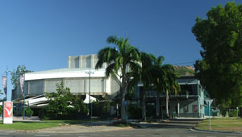

About Us
Based in Townsville, North Queensland, the Music Centre presents concerts and workshops throughout the year in a diverse range of genres, including classical, jazz, folk, blues, world, and contemporary music, featuring touring artists and locally-based professional and emerging artists.
Contact Us
Phone: 07 4724 2086
Mobile: 0402 255 182
Email: admin@townsvillemusic.org.au
Postal Address: PO Box 1006, Townsville, QLD, 4810
Address: Townsville Civic Theatre, 41 Boundary Street, Townsivlle, QLD 4810
Office Hours: 9:30am - 2:30pm, Monday - Wednesday
Our History
A Brief Historyby Jean Dartnall
| 1983 - | The Townsville Community Music Centre was established at a public meeting on May 24th. Then Deputy Mayor, Ken McElligott, opened the meeting and presented a cheque for $50 from the City Council to cover initial petty cash, the Centre's first funds. At the meeting an executive committee was formed. Over the next few weeks that committee drafted a constitution which was endorsed at another public meeting on June 15th. Fred Thompson was Chairman from September 1983, with Gordon Dean as his Deputy and Jan Eagleton as Secretary. |
|---|---|
| 1984 - | Mira Henderson, who had extensive experience in community music work in England, was the first staff member. (Her position was Acting Director because she was only in Townsville for a brief spell.) She instigated a series of classes starting in 1984 using the skills of people living in Townsville to enhance and encourage music learners of all ages. |
| 1985 - | Kirsty Veron was appointed as the first Director. Kirsty was very interested in teaching music to children and had worked with Mira in the 1983 classes. She held this position until 1988 leading the new organisation into a strong position in the Townsville arts community. |
| 1985 - | The Music Centre produced Benjamin Britten's Noyes Fludde in St James Anglican Cathedral. This involved hundreds of children and some of Townsville's best known (and loved) musicians. It was produced by Rachel Berker (now Rachel Matthews) and involved Bernie Lannigan and Sandra Voss in the main parts rehearsed by Bill Williams; Donna McMahon and Jenny Carr rehearsing the strings and recorders and guest conductor Donald Hollier. This was by the no means the only major production mounted by the Music Centre but was probably the largest. |
| 1987 - | This was the year of the first fund raising dinner. These dinners became a tradition as they were a wonderful mixture of good food, good wine and good music. The first ones were held at the home of Paul and June Tonnoir in North Ward. Later they moved to the Bishop's Lodge as guests of the Anglican Bishop. Attendees would often book their tickets for the next year's dinner as soon as they had attended this one. They ran until 2004. |
| 1988 - | Mary Lou Schoenfeldt was appointed as Administrator. Although this was initially a small part time job with limited responsibilities, Mary Lou made the job, the Centre and indeed music in Townsville, her own. She was a wonderful asset to the Centre and to the cultural life of the City until she had to retire due to ill health in 2003. |
| 1990 - | This year the first lunchtime concert was held at the PercTucker Gallery. The importance of providing performance opportunities for emerging musicians had become evident and from this time, for a number of years, one of the major activities of the Centre was the production and management of concerts. |
| 1999 - | Arts Queensland had been a major funder of Music Centre activities for a number of years but in this year they agree to provide funding on a three year basis. This made it much easier for the Centre to plan ahead and reduced the time that had to be spent on repetitive grant applications. This arrangement ran until 2004. |
| 2003 - | A spectacular variety concert was held at the Townsville Civic Theatre to celebrate twenty years of the Music Centre and as a tribute to May Lou. |
| 2005 - | The Centre moved to offices in the Old Magistrate's Court. |
| 2012 - | The Centre moved to its present office in the Townsville Civic Theatre building. |